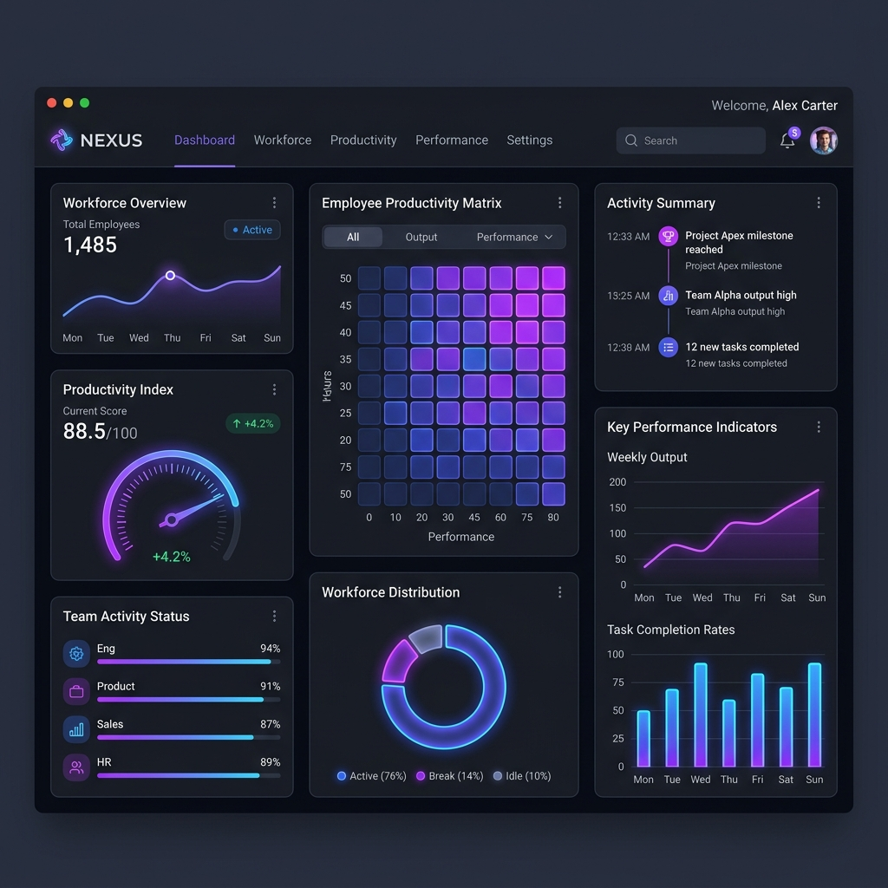
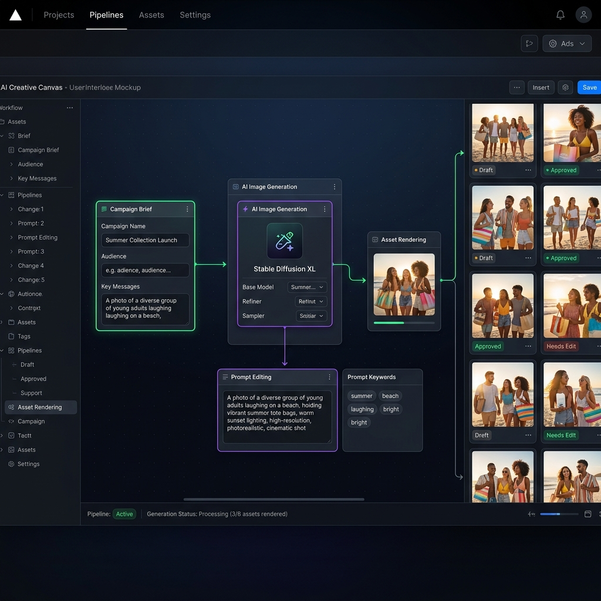
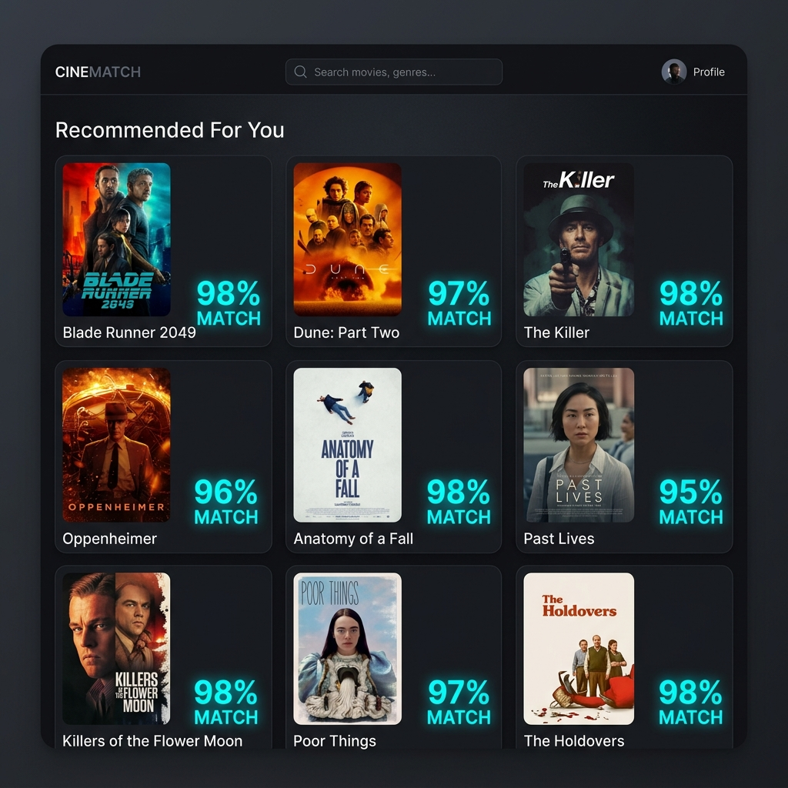

Building AI Products
That Solve
Real Problems.
I design and build AI-powered software, autonomous workflows, and intelligent applications by combining LLMs, machine learning, and modern software engineering.
I'm fascinated by the intersection of AI, software engineering, and automation. My work focuses on building intelligent systems that combine Large Language Models, machine learning, and scalable software architecture into practical applications.
I enjoy building intelligent systems that combine reliable software engineering with modern AI. My focus is creating products that are practical, scalable, and secure rather than simply showcasing new models.
Currently Building
- AI Automation Tools
- Agentic AI Workflows
- Multimodal AI Systems
- AI SaaS Products
LLMs
GPT-4o, Claude 3.5, Gemini 1.5 Pro
LangGraph
Stateful multi-agent workflows
Gemini
Multimodal vision & classification APIs
Python
NLP modeling, scripting, & agent loops
React
Responsive, interactive dashboards
Node
REST routing & catalog storage
Linux
Secure system environments & bash
Cloud
Docker, rootless Podman, GCP VMs
Case Studies.

AI-Native Secure Operating System for Autonomous AI Agents
Designed and developed a security-first execution layer on top of Fedora Linux. The platform isolates AI agents inside rootless Podman containers, manages cognitive agent workflows in LangGraph, and restricts operations with strict SELinux permission enforcements.

AI-Powered Hyperlocal Hazard Reporting System
Built an intelligent civic hazard mapping platform. Utilizes Google's Gemini Vision API to instantly categorize uploaded image reports, estimate danger severity, detect submission spam, and map records on a Leaflet map.

AI-Powered Workforce Analytics & Productivity Platform
Created an enterprise productivity index calculator. Parses unstructured raw employee updates and timesheets through Gemini API instances to map active blocks and highlight timeline performance blocks.

Multimodal Content Creation & Creative Automation Pipeline
Formulated an automated creative pipeline that connects campaign brief outlines directly to image generations (SDXL), ComfyUI custom controls, and voice synthesis modules.

Content-Based Recommendation Engine using Machine Learning
Built an NLP recommendation engine matching movie characteristics. Computes similarity variables using TF-IDF text features and Cosine Similarity matrices.
Other Projects
Resume Analyzer
AI resume evaluator using Natural Language Processing to extract skills and provide ATS suggestions.
Student Performance Prediction
Machine Learning models predicting academic outcomes using demographic and educational datasets.
Carbon Footprint Tracker
Developed during Smart India Hackathon to estimate, log, and visualize environmental footprint metrics.
Backend Infrastructure @ Woohl
Optimized backend REST API routing, marketplace product catalogues, and developer workflows during internship.
Generative AI Lab
Experiments with prompt engineering, multi-model automations, and character consistency pipelines (ComfyUI).
Milestone
Timeline.
Started BTech CSE @ DTU
Delhi Technological University
Enrolled in Computer Science, maintaining a first-year 8.8 SGPA while focusing on machine intelligence, NLP, and containerization.
Backend Developer Intern @ Woohl
Early-Stage Startup
Shipped marketplace catalog structures, optimized REST API performances, and contributed to product workflow architectures.
Built Recommendation Engine
Machine Learning Project
Formulated similarity matrices using TF-IDF features and Cosine algorithms, deploying it under a quick Streamlit interface.
Built Fedora AI OS Sandbox
Operating System Layer
Designed a secure operating sandbox containment system using rootless Podman containers, LangGraph checkpoints, and SELinux.
Built Ghost Employee AI
Enterprise Analytics
Integrated Gemini API to parse activity files automatically, reducing manual review time for employee productivity reports.
Currently Building Agentic AI
Advanced Cognitive Systems
Researching stateful multi-agent orchestrations, Model Context Protocol servers, self-healing code sandboxes, and secure container layers.
Engineering Interests
- Autonomous AI Agents
- Prompt Optimization Frameworks
- Intelligent Multi-Agent Workflows
- LangGraph State Orchestrations
- SELinux & Linux Container Security
- AI Video & Voice Generation
- Multimodal Vision-Text Integration
- Content Recommendation Pipelines
Currently Exploring
- Model Context Protocol (MCP)
- Agentic AI
- Multi-Agent Systems
- AI Security
- RAG Systems
- AI Operating Systems
- Tool Calling
Fedora AI OS Architecture
Deep-dive architecture notes outlining container sandbox isolation, LangGraph loop checkpoints, and custom SELinux modules.
Read ArticleLangGraph State Orchestration
Technical patterns covering state variables mapping, loop checkpointers, fallback routers, and resilient execution loops.
Read ArticleAI Container Security
Investigating user namespaces mapping and syscall filters inside rootless Podman execution layers for model safety.
Read ArticleLLM Workflows
A structural summary of prompt routing schemas, zero-shot structured outputs parser validation, and weight variables mappings.
Read Article
Let's Build Something
Intelligent Together.
I'm always interested in AI engineering, research, internships, and ambitious startup ideas.